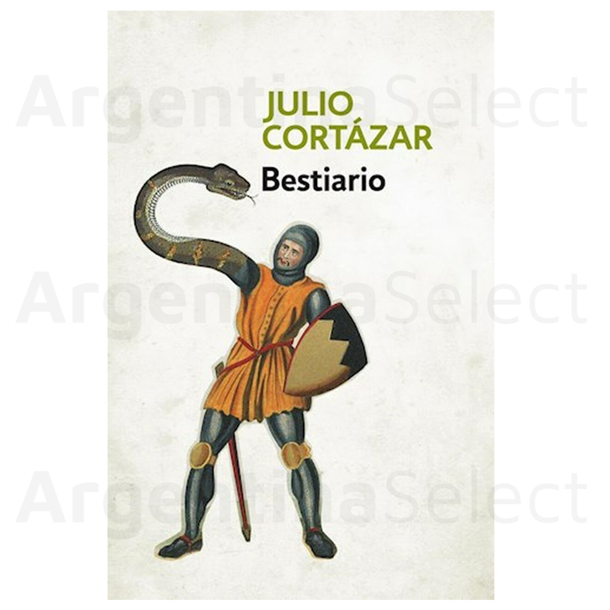
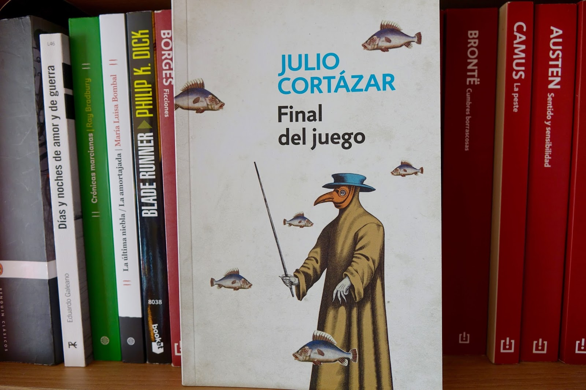
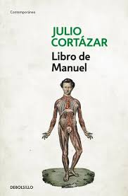

Some of his work.

"Rayuela" is Cortázar's most famous and important novel, published in 1963.

"Bestiario" it's his first short-stories book, published in 1951 in South America.

His second short-stories book, "Final del Juego", is one of his most influential works.

His fourth novel, "El Libro de Manuel", is a very political and controversial.